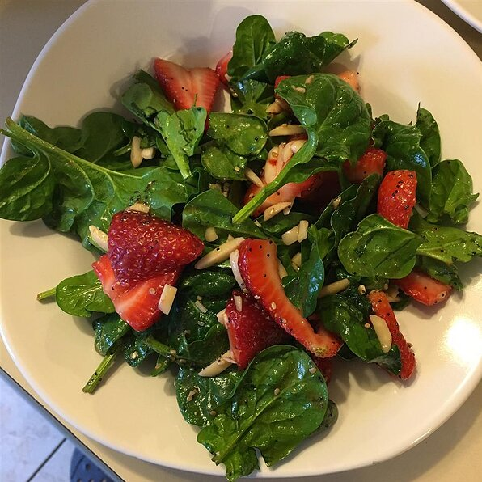
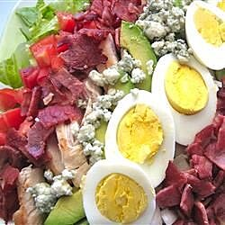
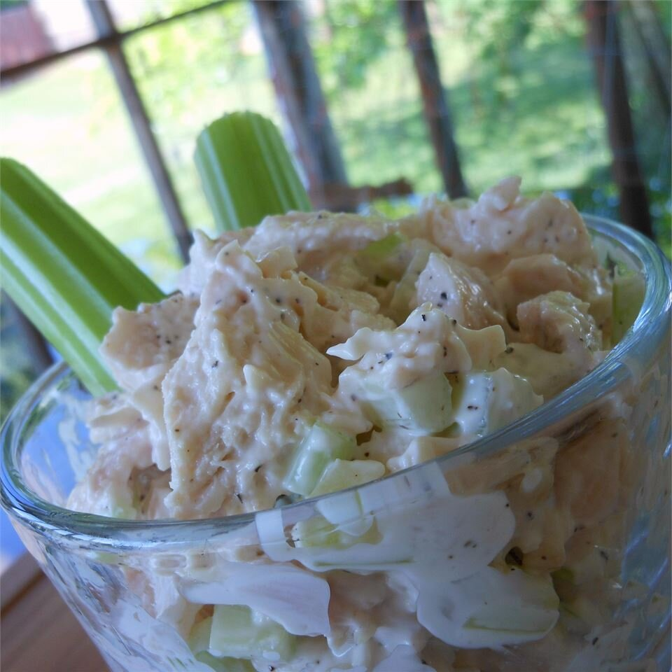

Tossed SALAD
This is probably what you think of when you think "salad." Tossed salads are made by tossing
ingredients (and usually dressing) in a haphazard way, so that they end up evenly mixed.

Composed SALAD
Composed salads are, well, composed. While the ingredients in a tossed salad are thrown together with
dressing, the ingredients in a composed salad are carefully assembled from the ground up with a
certain structure in mind.

Bound SALAD
Bound salads are held together with a binding agent like mayonnaise or a thick dressing. They look a
bit different than traditional composed or tossed salads, as vegetables aren't a requirement. This
is a kind of salad you'll often find at traditional picnics or potlucks.